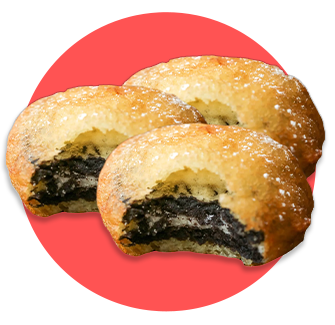

✨🍪FRIED OREOS🍪✨

Fried Oreos are a beloved indulgent treat that take the classic Oreo cookie and elevate it to a whole new level of flavor!
The process of making fried Oreos starts with the Oreo cookie: two chocolate wafer cookies with a sweet, creamy filling in the middle.
The cookies are then dipped in a smooth, thick mixture of Pancake Mix and eggs, that is slightly sweet and slightly savory, creating a delicious combination with the Oreo's crunch.
Then, the mixture is deep fries in hot oil.
Enjoy its sweet, creamy, and crispy taste that is so HEAVENLY DELICIOUS!!!